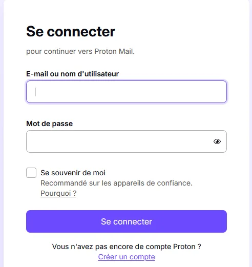
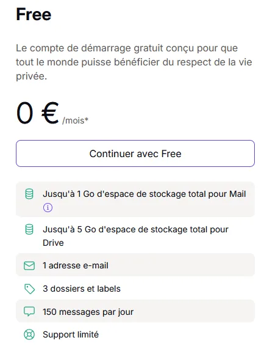
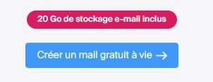
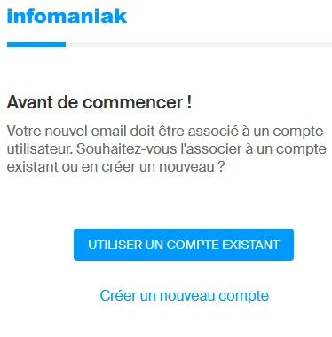
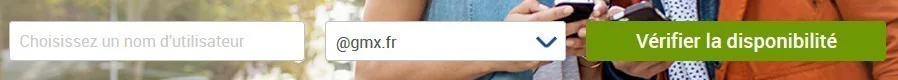

Pourquoi créer une adresse électronique ?
- Communiquer avec vos proches en toute simplicité
- Utiliser les services en ligne (impôts, santé, administrations)
- Recevoir des informations importantes vous concernant
Exemple avec Proton Mail (messagerie sécurisée)
Dans votre navigateur internet, rendez‑vous sur https://account.proton.me/mail et cliquez sur « Créer un compte ».

Page d’accueil Proton Mail – Créer un compte
Sélectionnez ensuite l’offre gratuite.

Choix de l’offre gratuite Proton
Autre solution : Infomaniak
Rendez‑vous sur https://www.infomaniak.com/fr/email-gratuit puis cliquez sur « Créer un mail gratuit à vie ».

Création d’un compte email Infomaniak
Autre solution : GMX
Rendez‑vous sur https://www.gmx.fr/mail/creer-compte-email/.

Page de création d’une boîte mail GMX
Choisissez le nom de votre adresse email puis cliquez sur « Vérifier la disponibilité ».

Choix de l’adresse email et vérification de sa disponibilité
Après la création
Pensez à consulter régulièrement votre messagerie. En cas de perte de votre mot de passe, utilisez le lien « Mot de passe oublié ».
← Retour aux tutoriels